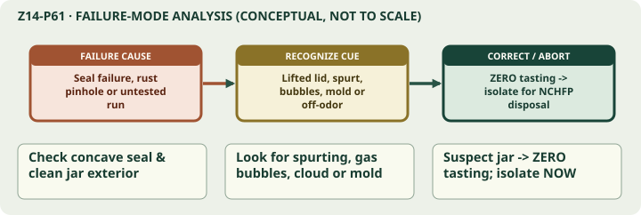

Z14-P61 · Food production and preservation · New manuscript
Inspect every home-canned jar before opening for spoilage warning signs
Catch compromised seals and microbial spoilage BEFORE a lid is pried open or a single drop touches kitchen counters.
When it applies · Every home-canned jar (and commercial can) taken from pantry shelves prior to meal preparation.
Equipment · Bright kitchen light, seal-check habit, and NCHFP disposal protocol awareness.

Actions
- Check the intact container and processing record before opening. Keep a suspect jar closed and isolated. A concave lid or vacuum sound cannot verify safety.[P10, P06]
- Look for unusual leakage, bulging, broken seal or visible changes without opening a suspect jar or sniffing its contents. Follow official isolation and disposal instructions.[P10]
- Remember the critical limitation: Clostridium botulinum toxin can be present in an improperly processed low-acid jar WITH ZERO visible signs and ZERO off-odor—therefore ALWAYS verify both jar condition AND that the batch followed an intact tested USDA/NCHFP protocol.[P10, P06]
Failure recognition · Scraping a tiny spot of white mold off the top of a home-canned jar of salsa or green beans and eating the rest beneath it.[P10]
Verify · Confirm the tested process record and container condition. Never use smell, taste or the sound of a lid as safety clearance.[P10, P06]
Stop or change course · ANY unsealed lid, bulging/spurting jar, rising bubbles, mold, odd odor, or uncertain low-acid canning history triggers immediate NO-TASTE disposal.[P10]
Evidence and editorial notes
- P06 · USDA / NCHFP · USDA Complete Guide to Home Canning (2015 / current NCHFP edition)
- Section: Complete Guide to Home Canning > Principle of Tested Protocols · Conditions: All residential home canning (boiling-water and pressure canning)
Support: Treat every USDA/NCHFP tested canning recipe as a single indivisible system: food pH, piece size, liquid viscosity, jar size, headspace, processing method, pressure/temperature, time, and altitude adjustment must all match the tested protocol.
Limitations: Adding extra starch, flour, oil, fats, or altering acid/low-acid ratios slows heat penetration and can cause lethal botulism. · Conflicting evidence: Directly prohibits online untested shortcuts and heirloom recipe alterations.
Editorial note: Foundational system-integrity rule across all Z14 canning cards. · Specialist reviewer: Food preservation process authority and Extension
Primary source · checked 2026-11-24 - P10 · NCHFP · Identifying and Handling Spoiled Canned Food (current web edition)
- Section: Identifying and Handling Spoiled Canned Food · Conditions: Suspect home-canned food; identify sealed versus open or leaking without exposure
Support: Do not taste. Isolate from people and animals and use current NCHFP or local public-health disposal advice.
Limitations: A sealed lid alone cannot establish a safe process. Reprocessing a sound unsealed jar has separate conditions. Suspected exposure is P23. · Conflicting evidence: See A02 claim audit for boundaries.
Editorial note: Anchors spoilage inspection and safe disposal in Z14. · Specialist reviewer: Food microbiology and public health
Primary source · checked 2026-11-24
Source lineage · NCHFP Identifying Spoiled Canned Food; new manuscript · Classification · New manuscript.